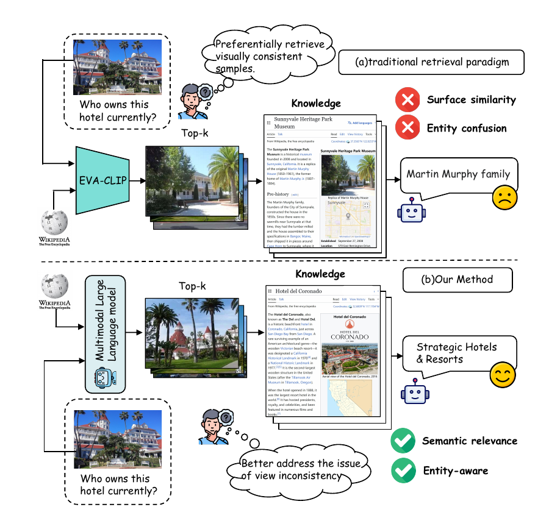
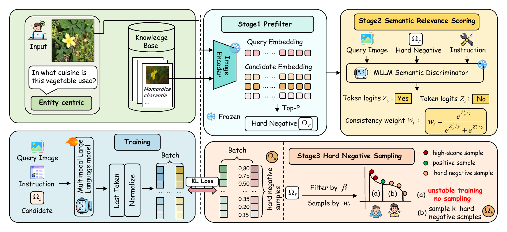
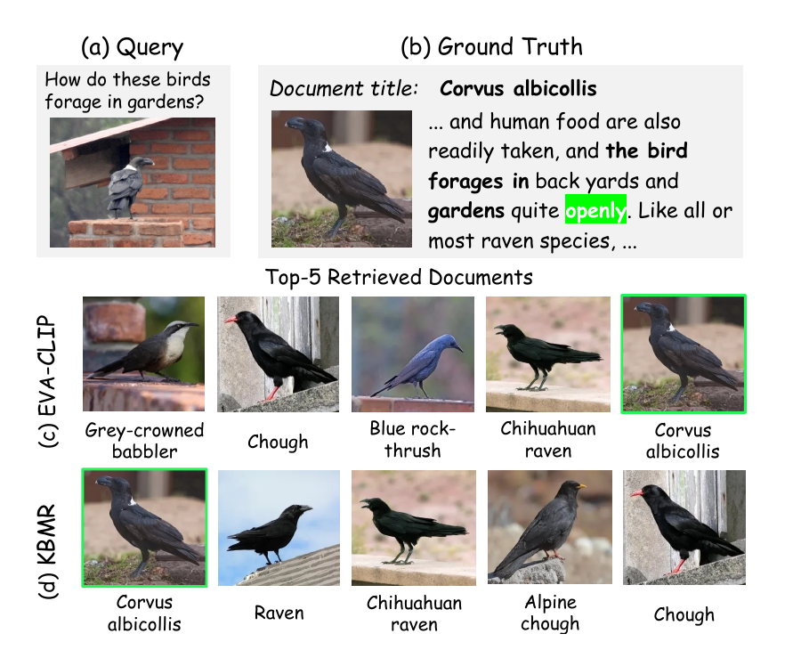

01
Visual collision
Different entities can look alike.
Architecture, species, products, and landmarks often share near-identical visual patterns while pointing to completely different evidence.
Accepted atACM Multimedia 2026
KBMR teaches multimodal language models to retrieve knowledge by entity identity—not merely visual resemblance—so the right evidence survives viewpoint changes and deceptive look-alikes.

Why entity alignment?
First-stage retrieval determines what downstream reasoning is allowed to see. When that pool is built only around appearance, the correct Wikipedia entity can disappear before reranking or generation even begins.
Visual collision
Architecture, species, products, and landmarks often share near-identical visual patterns while pointing to completely different evidence.
Entity continuity
A single entity may be photographed from another viewpoint, in another season or era, or rendered in a different visual style.
KBMR target
KBMR reshapes the embedding space around entity-level correspondence, supplying a more faithful candidate pool to any downstream KB-VQA pipeline.
The representation shift
From “does it look similar?” to “does it refer to the same entity?”
Rather than stacking another filter on a CLIP candidate pool, KBMR changes the first-stage retriever itself.
Method · four connected moves
A separate MLLM first supplies graded entity-consistency signals. KBMR uses those signals to mine difficult evidence and distill a fast embedding retriever.

encodePrompt an MLLM with the image, take its final-token hidden state, and normalize it into the retrieval embedding.
mineEVA-CLIP-8B retrieves the Top-50 visually close candidates after known positives are excluded.
scoreThe Semantic Discriminator converts its Yes/No logits into a continuous consistency weight.
distillFour difficulty strata yield eight hard negatives. Symmetric KL aligns retrieval similarity with the semantic prior.
Fast at inference
The Semantic Discriminator constructs supervision offline. At deployment, the trained KBMR retriever embeds images and performs ordinary similarity search—without a pairwise MLLM judge in the retrieval loop.
Paper-reported results
Entity alignment raises first-stage recall across benchmarks, then transfers into stronger downstream KB-VQA when KBMR replaces the original retriever.
24.7%
+11.4 points
vs. EVA-CLIP-8B at 13.3%
60.3%
+14.7 points
vs. EVA-CLIP-8B at 45.6%
80.4%
KBMR · LLaVA-OV-7B
Entity retrieval performance
79.3%
+12.7 points
OMGM with KBMR retrieval
One query, one decisive shift
In the paper's qualitative example, EVA-CLIP fills the top ranks with visually similar bird species. KBMR restores the correct entity to rank one.

Retrieval
Recall (%), higher is better.
| Retriever | E-VQA R@1 |
E-VQA R@5 |
InfoSeek R@1 |
InfoSeek R@5 |
|---|---|---|---|---|
| EVA-CLIP-8B visual baseline | 13.3 | 31.3 | 45.6 | 67.1 |
| KBMR Qwen2-VL-7B | 22.6 | 43.1 | 55.8 | 71.1 |
| KBMR LLaVA-OV-7B | 24.7 | 48.7 | 60.3 | 74.7 |
Scope. E-VQA and InfoSeek use the stated 100K-entry Wikipedia knowledge base; these values should not be read as full-Wikipedia retrieval results.
Availability. The public repository documents the Qwen2-VL-7B implementation. LLaVA-OV-7B values are paper-reported and do not imply a released LLaVA checkpoint.
Downstream · OMGM
| Pipeline | E-VQA All | InfoSeek All |
|---|---|---|
| OMGM | 50.2 | 43.5 |
| OMGM + KBMR | 54.7 | 50.8 |
| Absolute change | +4.5 | +7.3 |
Downstream · OK-VQA
| Setting | Pseudo R@5 | VQA score |
|---|---|---|
| OMGM | 73.4 | 66.6 |
| OMGM + KBMR LLaVA-OV-7B | 80.4 | 79.3* |
| Absolute change | +7.0 | +12.7 |
* KBMR replaces OMGM's retriever while the downstream pipeline is retained. This is not a stand-alone retriever VQA score. All values on this page are reported by the paper.
Citation
If KBMR helps your research, please cite the paper and explore the complete open-source implementation.
BibTeX
@article{xu2026beyond,
title={Beyond Visual Similarity: Entity-Aligned Retrieval for Knowledge-Based Visual Question Answering},
author={Xu, Hangrui and Wu, Zhengxian and Yu, Yunyao and Chen, Zhuohong and Cong, Rui and Deng, Xiangwen and Liu, Zhifang and Jiao, Peng and Wang, Haoqian},
journal={arXiv preprint arXiv:2608.21450},
year={2026}
}Ready to copy.